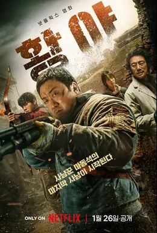

The genetics
The genetic element is limited. The villain, Dr. Yang Gi-su, conducts illegal experiments on teenagers with a serum meant to confer immortality (or, according to the Spanish Wikipedia, to create a new, more resistant race), and the experiments produce mutant soldiers who guard his camp. The sources do not describe the serum in genetic terms, and the mutants serve mainly as opponents in fights. Gi-su is a classic mad doctor driven by a private grief, the wish to bring back his dead daughter, whose experiments cost many young lives and who dies at the hands of the hero. The film is a star action vehicle in which science features only as the villain's tool.
The story
In a post-apocalyptic Seoul laid waste by a deadly earthquake, set three years after Concrete Utopia, the hunter Nam-san scavenges to keep his village alive with his friend Choi Ji-wan. When Su-na, a girl from the village, is kidnapped, he traces her to an apartment complex controlled by Dr. Yang Gi-su, a rogue scientist who injects teenagers with a serum intended to make humans immortal, experiments that have killed many of them; his real aim is to revive his dead daughter, So-yeon. Joined by Lee Eun-ho, a sergeant from the camp who wants to free its prisoners, Nam-san and Ji-wan fight their way past Gi-su's mutant soldiers and rescue Su-na. Gi-su flees with his daughter's body in a suitcase, damages it while shooting at an angry mob, and is killed by Nam-san.